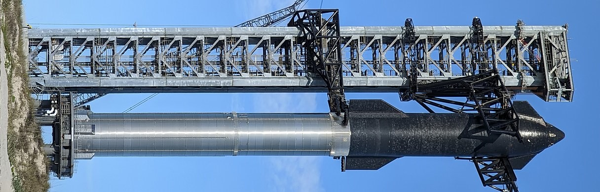

Here is some information about some rockets of my choice:
- Falcon 9: Es un vehículo de lanzamiento parcialmente reutilizable de dos etapas diseñado y fabricado por SpaceX. Usa como propelentes queroseno para cohetes (RP-1) densificado y oxígeno líquido (LOX). Su versión actual, el Falcon 9 Block 5, tiene una carga útil aproximada de 22.800 kg a órbita baja terrestre y de aproximadamente 8.300 kg a órbita de transferencia geosíncrona. La primera etapa es capaz de aterrizar para ser reutilizada en nuevas misiones, ya sea volviendo a tierra o sobre una nave dron. Mediante este cohete, SpaceX ofrece servicios como lanzamiento de satélites, y transporte de carga a la Estación Espacial Internacional (ISS). En el año 2020 transportó por primera vez astronautas a la ISS junto con su nueva nave Crew Dragon, y en el año mismo empezó el servicio regular
- Falcon Heavy: Cae en la gama de sistemas de lanzamiento "súper pesados" bajo el sistema de clasificación usado por un panel de revisión de vuelo espacial humano de la NASA. El concepto inicial prevé cargas útiles de 25 toneladas a LEO, pero para abril de 2011 se proyectaba ser de hasta 53.000 kilogramos (117.000 lb) con cargas útiles de GTO de hasta 12,000 kilogramos (26.000 lb), Informes posteriores en 2011 proyectaron mayores cargas útiles más allá de LEO, incluyendo 19.000 kilogramos (42.000 libras) a la órbita de la transferencia geoestacionaria, 16.000 kilogramos (35.000 libras) a la trayectoria translunar, y 14.000 kilogramos (31.000 libras) en una órbita trans Marciana a Marte, SpaceX levantó la carga útil proyectada de GTO para Falcon pesado hasta 21.200 kilogramos (46.700 libras). En abril de 2017, la carga útil de LEO proyectada para Falcon Heavy fue aumentada de 54.400 kilogramos (119.900 libras) a 63.800 kilogramos (140.700 libras) . La carga útil máxima se logra cuando el cohete vuela un perfil de lanzamiento completamente desechable, no recuperando ninguno de los tres propulsores de primera etapa.
- Starship: Este sistema de transporte totalmente reutilizable diseñado para llevar tripulación y carga a la órbita terrestre, la Luna, Marte y más allá, es capaz de transportar hasta 250 toneladas a la órbita baja terrestre en una configuración prescindible o 150 toneladas con recuperación del vehículo. Eso implica cientos de satélites de Starlink, por los 60 que puede poner en órbita actualmente un Falcon 9, o gran parte del material necesario para establecer una futura base en la Luna, por ejemplo. La parte superior, correspondiente a la Starship, mide 50 metros de altura y 9 de diámetro, y cuenta con una capacidad de 1.200 toneladas de propelente, además de un empuje de 1.500 toneladas-fuerza. De la propulsión en órbita se encargarán seis motores, tres Raptor y tres Raptor Vacuum (RVac), diseñados para su uso en el vacío. Su uso está pensado para maniobras de inserción orbital o de variación de trayectoria en el espacio profundo. 